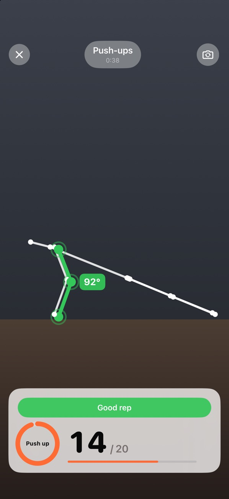

원하는 앱을 선택하세요.
잠시 거리를 두고 싶은 앱을 선택하세요. 언락키는 Apple의 Screen Time 기능을 사용하여 이러한 앱을 잠금 상태로 유지합니다.
콘텐츠를 보기 전에 가볍게 몸을 움직여 보세요.
자동 조작을 줄이고, 당신의 시간을 더 주체적으로 활용하세요.
하루를 빼앗는 앱을 잠그세요. 팔굽혀펴기, 스쿼트, 점핑잭을 짧게 하고 몇 분의 사용 시간을 얻을 수 있습니다.
무료 · 구독 불필요 · 계정 생성 불필요


앱 스크린샷
주요 기능
잠시 거리를 두고 싶은 앱을 선택하세요. 언락키는 Apple의 Screen Time 기능을 사용하여 이러한 앱을 잠금 상태로 유지합니다.
푸시업, 스쿼트 또는 점프 운동 중에서 선택하세요. 아이폰 카메라가 운동 횟수를 실시간으로 세어주고, 피드백을 제공합니다.
원하는 보상과 일일 사용 시간 제한을 설정하세요. 앱을 사용하는 동안 획득한 시간이 적용되고, 이후 잠금 기능이 다시 활성화됩니다.
앱 둘러보기
실제 화면입니다. 내부를 더 잘 느껴보실 수 있습니다.
FAQ
시작하기 전에 알아두면 좋은 정보들입니다
언락키는 Apple의 Screen Time 기능을 사용합니다. 앱을 선택하고 설정 과정에서 해당 앱에 대한 접근 권한을 부여합니다. iPhone 설정에서 언제든지 접근 권한을 취소할 수 있습니다.
Unlocky는 사용자를 녹화하지 않습니다. 카메라 프레임은 iPhone에서 실시간으로 분석됩니다. 동영상과 사진은 저장되거나 업로드되지 않습니다.
네. 푸쉬업, 스쿼트 또는 점핑잭 중 원하는 운동을 선택하고, 각 세션을 완료했을 때 얼마나 시간을 보상으로 받을지 설정할 수 있습니다. 하루 최대 시간을 설정하면 규칙을 지키는 데 도움이 됩니다.
네. Unlocky는 구독이나 유료 콘텐츠가 없습니다. iOS 17 이상이 설치된 아이폰이 필요합니다.
무료 · 구독 불필요 · 계정 생성 불필요
편안한 속도로 운동하고, 불편함이 느껴지면 언제든지 멈추세요. 건강상의 문제가 있다면 새로운 운동 루틴을 시작하기 전에 의사와 상담하는 것이 좋습니다.